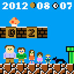
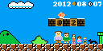
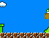
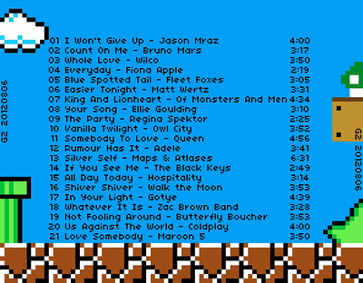

G2 20120807

As I barely just talked about, I've created another G2 music mix for Mary, because it's been a while since I last created one (despite having posted about the prior mix earlier today). She doesn't yet know about this mix, yet here I am posting about it. Let's just hope she doesn't read her feeds before I present it to her later today. There's no theme to the music for this G2, just that it's enjoyable.
Before I get into the details about the artwork, which always feels like just as much work as finding all the songs (if not more), let's get to that song list:
| Track | Title | Artist | Duration |
|---|---|---|---|
| 01 | I Won't Give Up | Jason Mraz | 4:00 |
| 02 | Count On Me | Bruno Mars | 3:17 |
| 03 | Whole Love | Wilco | 3:50 |
| 04 | Everyday | Fiona Apple | 2:19 |
| 05 | Blue Spotted Tail | Fleet Foxes | 3:05 |
| 06 | Easier Tonight | Matt Wertz | 3:31 |
| 07 | King And Lionheart | Of Monsters And Men | 4:34 |
| 08 | Your Song | Ellie Goulding | 3:10 |
| 09 | The Party | Regina Spektor | 2:25 |
| 10 | Vanilla Twilight | Owl City | 3:52 |
| 11 | Somebody To Love | Queen | 4:56 |
| 12 | Rumour Has It | Adele | 3:41 |
| 13 | Silver Self | Maps \& Atlases | 6:31 |
| 14 | If You See Me | The Black Keys | 2:49 |
| 15 | All Day Today | Hospitality | 3:14 |
| 16 | Shiver Shiver | Walk the Moon | 3:53 |
| 17 | In Your Light | Gotye | 4:39 |
| 18 | Whatever It Is | Zac Brown Band | 3:28 |
| 19 | Not Fooling Around | Butterfly Boucher | 3:53 |
| 20 | Us Against The World | Coldplay | 4:00 |
| 21 | Love Somebody | Maroon 5 | 3:50 |
I don't have much to say (to you) about the music on this album. I'm particularly pleased with a couple songs, but I'll leave it to you to guess. I don't listen to the radio very much, so there could be some overlap in what is on the radio and on here. I know I have a Gotye song, but it's not the song you all know (with a great fan-made video), and an Adele song (isn't every song of hers on the radio?), and plenty of other potential hits. Really, the music is for Maria. Some of it has a meaning, and some of it is just enjoyable. (P.S. You should stay away from Amazon's MP3 Store. It's so cheap, it'll give you no excuse to not buy too much music.) Now, on to the artwork:
The shortened version I use for the album artwork on the MP3s
The full-size image, which I printed (at 300 dpi) for the CD jewel case.
A whole variety of thoughts on this artwork:
- First off, this artwork was obviously inspired by one of my favorite video games of all time, Super Mario Bros. I actually started the artwork with just our little family (limiting height to 16 pixels), but when it came time to put all the pieces in place, I thought it'd be fun to put them in the Mushroom Kingdom. I didn't trace anything, but certainly used some screen shots to help guide my drawing. The scale doesn't match the game (nor does the scale match between the people and game elements), but...
- The color palette is limited to the original NES color palette. It's actually a fairly extensive palette. To make it easier to use just these colors, I used a handy color palette.
- I made the front cover artwork (and the base of the back cover) at a 1:1 scale. This little picture you see right here is the whole artwork at the original size. I just zoomed in while drawing. I had to scale them up to larger sizes for display and printing.
- In order to make pixel art at at 1:1 ratio, I used the brilliant application called Pixen (for [OS X]. Pixel art obviously isn't my strong-suit, but I've been inspired by Shaun Inman (who made the incredible game The Last Rocket for [iOS], and to a lesser extent, Neven Mrgan's art in The Incident (for [iOS] and [OS X] as well). I admit I completely love Shaun Inman's style and work. I've talked about him too much, but his work inspires me too much to pretend otherwise.
- For ease on the back artwork, I didn't limit myself to just using Pixen. I created this little base graphic in Pixen, but then scaled it up to full-size to add the track listing.
- The typeface is 04b03, which was perfect for my needs, and fit really well with the look/feel. Pixen doesn't support type, but I could have recreated all of it by hand to have things perfectly line up. Although I obviously spent a bunch of time working on this, I wasn't going to be THAT anal. This time.
- Lastly, I brought back the G2 moniker for the mixes. I went way from it for two mixes, but I can't deny what these are - mixes all created in what I see as the second generation of my relationship with Maria.
{kind=link}

Back artwork, near full-size.
Maria, I love you, and hope you enjoy the mix. I'm not sure when I'll stop making mixes for you, but they're just one way I show you I love you.
- Prior: (G2) 20111012
- Next: Zelda Cross Stitch